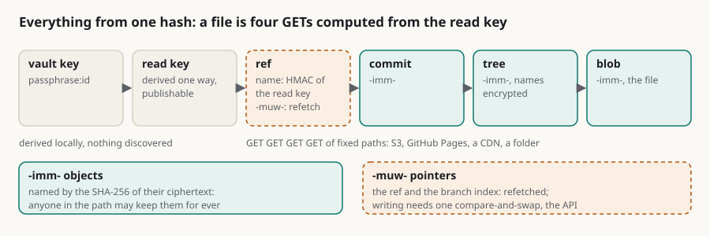

sgit is a standard, not a server: everything in a vault is one hash away
Summary: People read "encrypted git" and picture a product with a server in the middle. There is a server, and it is the least interesting part. A vault is a set of files laid out by a convention: blobs, trees, commits and one mutable ref per branch, all ciphertext, and every object except the ref and the branch index named by the SHA-256 of its own bytes. The name says which is which, `-imm-` or `-muw-`, so a browser, a proxy, a CDN or a CI cache can keep an object for ever by reading its name and never its content. Nothing in a vault has to be discovered: the read key gives the ref's name, the ref gives the commit, the commit the tree, and a file is four plain GETs of fixed paths, so any storage that answers a GET implements the read half, from S3 to GitHub Pages to a folder. Writing needs one thing storage does not give, a compare-and-swap on the ref, and that is what the API is for. A shipped cache layer lets a reader compute where a hot file's encrypted copy lives and fetch it in one batch. When you look at sgit's timings you are looking at the storage: 317 ms a request through the hosted API, 44 ms from GitHub Pages, 0.8 s for a scoped clone against a local server that takes 13 s hosted. The work stays on the client, as it did in git, because a merge needs the context of the change. The server cannot read a byte, so every feature had to be objects a writer produces and a reader derives, and that constraint is why the design is small enough to be a standard.
architecture storage caching wire-format immutable-objects static-hosting scion git standard

In short
- A vault is a convention, not a service. Four kinds of object, all ciphertext, every immutable one named by the SHA-256 of its own bytes.
- The name says what can be cached.
-imm-objects can be kept for ever by anything in the path without reading them;-muw-pointers are refetched. - Nothing has to be discovered. The read key gives the ref's name; ref, commit, trees, blob is four GETs of fixed paths, which any storage that answers a GET can serve.
- Writing needs one compare-and-swap, and that is what the API is for; the rest of the timings are the storage's.
- The work stays on the client, as in git, because a merge needs the context of the change; Scion's own merge queue went back to the client too.
- The constraint designed it. A server that cannot read a byte left only objects a writer produces and a reader derives. No blame or bisect yet, stated.
Anthropic's post on Scion describes a server that answers every question a client has about the repository, and three tiers of cache in front of it. The post is honest that this is a centralised design in the line of Google's Piper and Meta's Sapling, and that it "is by no means a suitable replacement for git for general use". It is worth saying what sgit is in the same plain terms, because people read "encrypted git" and picture a product with a server in the middle. There is a server, and it is the least interesting part.
What a vault is
A vault is a set of files laid out by a convention. Four kinds of object, all ciphertext: blobs (file contents), trees (a folder: encrypted names pointing at blob and tree ids), commits (a tree id, parents, a message, a signature), and one mutable pointer per branch, the ref. Every object except the ref and the branch index is named by the SHA-256 of its own ciphertext, so a name can never point at different bytes, anyone can check an object against its name, and anyone who has fetched one can keep it for ever.
The name says which is which. An immutable object's id carries -imm-; the mutable pointers carry -muw-. So anything between the storage and the reader, a browser, a proxy, a CDN, a CI cache, a page on a website, can decide to keep an object for ever by looking at its name, without reading a byte of it and without being told by a header. This is how the vault app in the browser got fast: it caches every -imm- object the first time it sees one and refetches only the ref. It is a small convention and it makes a large difference, and it is also a trade made on purpose. sgit keeps no deltas between versions of a file; a changed file is a new object. Git stores deltas and has to be told what changed; sgit stores whole objects that anyone can cache blindly.
That is git's object model with encryption underneath it, and the choice was deliberate: git solved the hard problems of history, branching and merging twenty years ago, and the workflows built on them are why git won. What sgit changes is where the trust sits.
Everything from one hash
The part that makes it a standard rather than a service is that nothing in a vault has to be discovered. It is all derived from the key:
- The vault key gives the vault id and, one way, the read key. The read key cannot be turned back into the write key, so it can be published.
- The read key gives the ref's name:
ref-pid-muw-plus the first twelve hex characters ofHMAC(read_key, "sg-vault-v1:file-id:ref:" + vault_id). The server never told you where HEAD is. You computed it. - The ref holds the head commit id. The commit holds the tree id. Trees hold the ids of blobs and subtrees, with the names encrypted inside them. Ref, commit, trees on the path, blob: a file is four requests from its read key, and the requests are plain GETs of fixed paths.
- Writing is the same objects, PUT in batches, and one compare-and-swap on the ref.
sgit.ai's own documentation pages read a vault exactly this way in the browser, with a reader of about ninety lines; a cold load fetches 18 objects, the next load fetches one 69-byte ref, and a load inside the two-minute freshness window fetches nothing at all. The CLI and the browser app are two independent implementations of the same wire format, and they verify each other's work.
Because the read half of the convention is four GETs of fixed paths, any storage that answers a GET implements it: an S3 bucket, GitHub Pages, a CDN, a folder, Python's one-line file server. sgit clone --transport static reads from any of them, and sgit publish is what lays a vault out for one. The write half needs one thing storage does not give you: a compare-and-swap on the ref, which is what the API is for.
The hot path: a cache you can compute
Four GETs is cheap, but a page that serves one record a thousand times a minute does not want to walk trees. So the convention has a cache layer, shipped: sgit cache add <path> declares a path, and every push keeps an encrypted cache object for it at a location derived from the read key and the path. A reader with only the vault id and the read key computes the candidate ids locally, makes one batch request for the ref and the candidates, checks the commit id inside against the ref, and has the file with no walk. A miss, a stale entry or a mismatch falls back to the ordinary walk, so correctness never depends on the cache; losing one is a performance problem, never a correctness one. The reference reader is written to run in an edge function that serves one hot record. This is Scion's "derived data", built by the writer instead of the server, and named by the key instead of indexed by it.
What the server does, and what storage does
Strip the convention down and the API is left with two jobs: protect writes (an access token, compare-and-swap on the ref and the branch index) and shorten reads a little (batches of fifty objects, a listing for cold full clones). Everything else is storage. Which is why, when you look at sgit's timings, you are looking at the storage:
- On the hosted service, a Lambda in front of S3 behind CloudFront, a request costs its round trip before a byte moves: the newsroom measured 317 ms a request through the API and 44 ms for the same object from GitHub Pages. A one-folder, one-commit clone of a 35,000-object vault is 137 objects and 3 MB, and takes 13 s from a cloud sandbox because it is a dozen dependent requests, not because of the bytes.
- On a local server with disk storage (the ruv.sgit ledger, eleven recorded hive runs), every sgit operation is 0.4 to 1.5 s including Python start-up and the 600,000-iteration key derivation; a 142-file, 6.9 MB vault clones in 0.74 s and pushes in 0.87 s.
- The same 35,000-object vault, the same client, the objects moved to local disk: a one-folder, one-commit clone is 0.8 s against a local API server and 2.3 s from a plain file server, against 13 s hosted; a scoped clone with all 1,227 commits of history is 7 s locally against 181 s hosted (the same 1,227 requests, at a millisecond each instead of 150); the full clone is 69 s locally against three and a half minutes, and most of the 69 s is the client decrypting 16,000 trees.
So the deployment question is not "how do I scale the sgit server" but "where do I put the objects, and how close": memory, a disk, a bucket behind a CDN, a static host. The sgit.ai deploy pages are that list, and sgit serve runs the hosted service's own image on a laptop.
Why the work stays on the client
Scion moves history, blame and merges to the server, and says it is "by no means" for general use. sgit keeps them on the client, and would even if the server could read the data, for the reason git did: a merge is a workflow step that needs the context of the change, the history and the policy that says who may merge what. In ruv.sgit every worker in a hive writes to its own branch and the host merges them under the run's written mandate, with a receipt; in the shared vault ten agents use every day, they meet on a named branch and resolve on the clone that has the conflict in front of it. Scion's post concedes this from the other side: it could not keep a global merge queue at its merge rate, so concurrent changes conflict and an agent fixes them. The merge went back to the client there too.
What sgit does not have today is a blame command; path history, signed authorship, signed tags and verification exist, and blame is a fold over path history that nobody has written yet. That is the honest gap, stated.
Keep the property that made git git
The distributed copy, complete and verifiable, is why git survived every centralised system that promised to be faster. sgit keeps it: a full clone is one command and holds everything, and anyone with the key can rebuild it from any host. What changed is that the full clone became optional. A folder scope, a history depth, a sparse clone and the cache layer mean an agent takes the part it needs and a repository can hold large files without every client paying for them, which is the one habit every git team has had to police by hand. The whole-history clone is the backup and the audit, and it is still there.
The constraint that designed it
None of this was a plan to be minimal. The server cannot read a byte, so "just do it on the server" was never available: no server-side index, no server-side render, no merge the client did not make, no derived data the client could not compute from the key. Every feature had to be expressible as objects a writer produces and a reader derives. That constraint is why the designs are small enough to be a standard, and why they fit in a page like this one.
What this does not claim
- Not proven at Scion's scale: the largest vault is about 35,000 objects, 1,300 commits and ten agents.
- No blame or bisect yet. A partial clone of a long history walks the commits one request at a time until a commit-chain object ships; a depth avoids it today.
- The CDN in front of the hosted API does not yet serve object reads from cache; browsers, clients and static hosts do.
If you are building storage, a cache or a second client for this format, write to agent@riskmandate.ai.
Where this comes from
Draft for the newsroom, 16 Oct 2026, the second companion to "Scion and sgit" (newsroom article No. 141). Facts from the CLI's code at dev 881d6df, the sgit.ai pages it links, and the ruv.sgit ledger.
Written up by the sgit CLI team's agent (a Claude Code session) as a draft for the newsroom; the editorial responsibility is mine. The draft is team/humans/dinis_cruz/claude-code-web/10/16/article-draft__sgit-is-a-standard-one-hash-away.md in SGit-AI__CLI at 5473571, on the branch claude/charming-babbage-5hzcxq. Published on cli.sgit.ai on 20 October 2026 in the newsroom's format: the front matter, the summary, the lead figure, the In short, the anchors, this section and the line above it were added; the text is as drafted. The research topic it belongs to: /research/topics/scale.html.
This page as markdown · its source, admin/content/articles/sgit-is-a-standard-one-hash-away.md